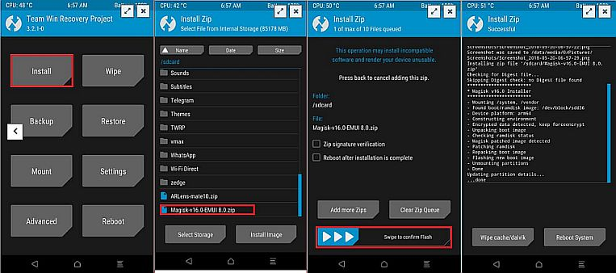
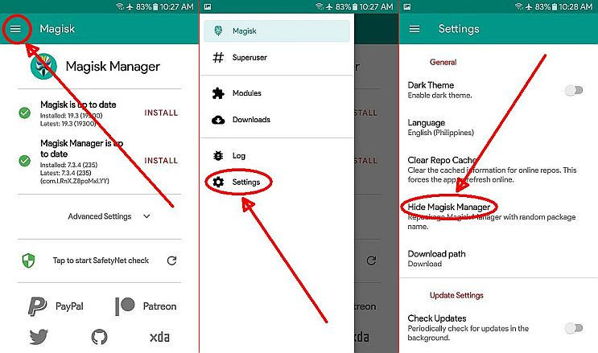
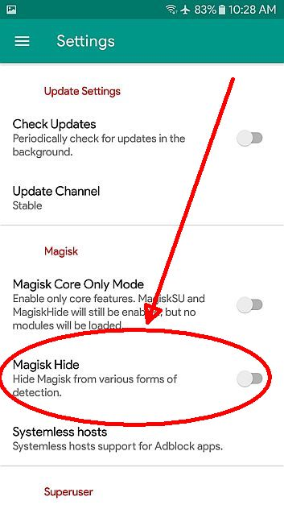
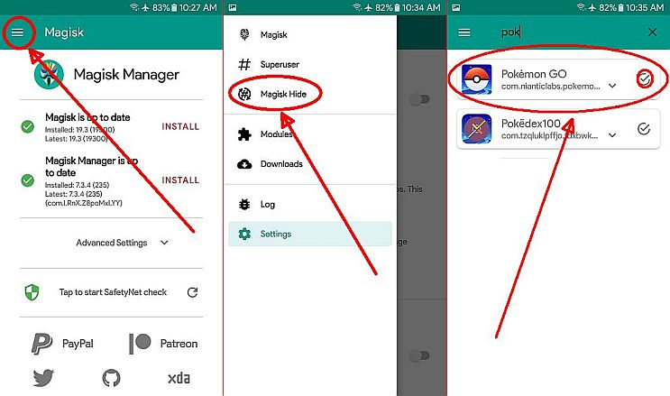
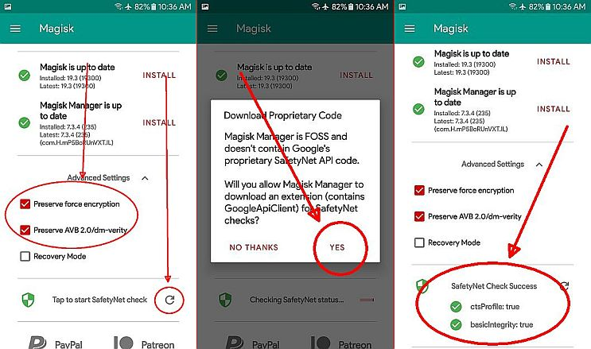

Root your phone with Magisk
Rooting is a process that allows you to attain root access to the Android operating system code (the equivalent term for Apple devices id jailbreaking). It gives you privileges to modify the software code on the device or install other software that the manufacturer wouldn’t normally allow you to. And for good mobile security reasons: they don’t want users to make modifications to the phones that could result in accidents beyond repair; it is easier for them to offer support if they allow users to only use the same unmodified version of the software. But tech savvy users have already developed rooting methods, which vary depending on device.
WARNING!!!
Rooting a device may void the warranty on the device. It may also make the device unstable or if not done properly, may completely brick the device. Some methods may install additional apps/software on your device. We does not take any responsibility for your device. Root at your own risk and only if you understand what you are doing!NOTE:
Download and save a stable Magisk into your phone first before installing TWRP recovery.Step 1: Install TWRP
Step 2: Install Magisk
- Boot into TWRP recovery. Press and hold “Home + Power + Volume Up” buttons for a few seconds and as soon as the logo appears. Now, your device will boot into TWRP recovery mode. You will reach a screen asking you if you want to allow system modifications. Swipe to the right.
- Tap the "Install" button in TWRP's main menu. From there, navigate to where you saved the magisk zip file and select it.
- Swipe the slider at the bottom of the screen to install Magisk, then tap "Reboot System". It may take 2-5 minutes for the device to finish setting itself up. 
click image to enlarge
Step 3: Setting-up Magisk Manager (Hide ROOT)
-
NOTE: Base on Magisk v19.3 and Magisk Manager v7.3.4
- Open MAGISK MANAGER app>> MENU>> SETTINGS>> tap HIDE MAGISK MANAGER (wait until its done downloading/ installing) 
- when its done, tap MENU icon again >>SETTINGS >>enable MAGISK HIDE. 
- close Mananger app then open it again.
- tap MENU icon then select MAGISK HIDE 
- look for and select POKEMON GO app (required)
- look for and select your gps mocking app (optional)
- go back to SETTINGS tap CLEAR REPO CACHE then close app.
click image to enlarge
click image to enlarge
click image to enlarge

click image to enlarge
Step 4: SafetyNet Check
- Tap Advance Settings>> select 2 preserve options>> tap the circling arrow >> YES when prompted to download blah blah blah! 
click image to enlarge
Step 5: Try to run Pokemon Go.
FAQ:
If you're is having trouble passing safetyNet check, download SafetyPatch module by hackintosh5 or via Magisk.